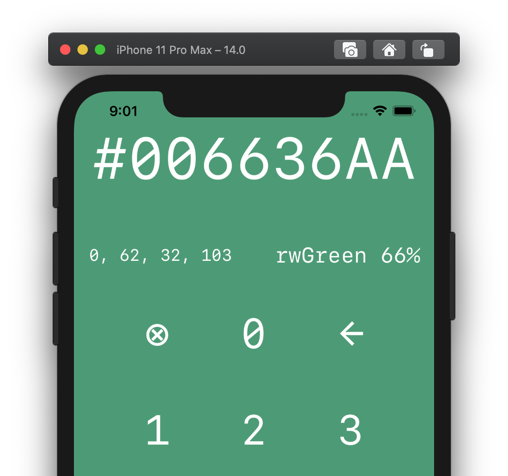

第19章：测试Combine代码¶
研究表明，开发人员跳过写作测试有两个原因：
- 他们编写无错误的代码。
- 你还在读这个吗？
如果你不能直言不讳地说你总是写无错误的代码——并假设你对第二句话的回答是肯定的——本章是给你的。谢谢你留下来！
在您开发新功能时，特别是在事后，编写测试是确保应用程序中预期功能的好方法，以确保您的最新工作不会在之前一些正常工作的代码中引入回归。
本章将向您介绍根据Combine代码编写单元测试，在此过程中您将获得一些乐趣。您将针对这个方便的应用程序编写测试：

ColorCalc是使用Combine和SwiftUI开发的。不过，它有一些问题。要是它只有一些不错的单元测试来帮助找到和解决这些问题就好了。幸好你在这里！
入门指南¶
在项目/启动器文件夹中打开本章的入门项目。这旨在为您提供您输入的十六进制颜色代码的红色、绿色、蓝色和不透明度（又名alpha）值。如果可能的话，它还将调整背景颜色以匹配当前的十六进制，并在可用时给出颜色的名称。如果无法从当前输入的十六进制值导出颜色，则背景将设置为白色。这就是它旨在做的事情。但在丹麦，有些东西是腐烂的——或者更像是一些东西。
幸运的是，您有一个全面的QA团队，他们花时间查找和记录问题。您的工作是简化开发质量保证流程，不仅要解决这些问题，还要编写一些测试，以在修复后验证正确的功能。运行该应用程序并确认您的QA团队报告的以下问题：
问题1¶
- 行动：启动应用程序。
- 预期：名称标签应显示
aqua。 - 实际：名称标签显示可选（
ColorCalc.ColorNam...。
问题2¶
- 行动：点击
←按钮。 - 预期：十六进制显示器中的最后一个字符将被删除。
- 实际：删除后两个字符。
问题3¶
- 行动：点击
←按钮。 - 预期：背景变白。
- 实际：背景变红。
问题4¶
- 操作：点击
⊗按钮。 - 预期：十六进制值显示清除为
#。 - 实际：十六进制值显示不变。
问题5¶
- 操作：输入十六进制值
006636。 - 预期：红绿蓝不透明度显示
0, 102, 54, 255。 - 实际：红绿蓝不透明度显示器显示
0, 62, 32, 155。
您很快就会开始编写测试和解决这些问题，但首先，您将通过测试Combine的实际代码来学习测试Combine代码！具体来说，您将测试几个操作符。
Note
本章假设您对iOS中的单元测试有些熟悉。如果没有，你仍然可以跟随，一切都会好起来的。然而，本章不会深入探讨测试驱动开发的细节——又名TDD。如果您想更深入地了解此主题，请查看raywenderlich.com库中的iOS测试驱动开发教程。
测试Combine运算符¶
在本章中，您将使用Given-When-Then模式来组织您的测试逻辑：
- 给定一个条件。
- 操作完成时。
- 然后会出现预期的结果。
仍在ColorCalc项目中，打开ColorCalcTests/CombineOperatorsTests.swift。
首先，添加一个subscriptions属性来存储订阅，并将其设置为tearDown()中的空数组。您的代码应该如下所示：
var subscriptions = Set<AnyCancellable>()
override func tearDown() {
subscriptions = []
}
测试 collect()¶
您的第一次测试将是针对collect操作符的。回想一下，此运算符将缓冲上游发布者发出的值，等待它完成，然后在下游发出包含这些值的数组。
使用给Given — When — Then模式，通过添加以下代码来开始新的测试方法：
func test_collect() {
// Given
let values = [0, 1, 2]
let publisher = values.publisher
}
使用此代码，您可以创建一个整数数组，然后从该数组创建一个发布者。
现在，将此代码添加到测试中：
// When
publisher
.collect()
.sink(receiveValue: {
// Then
XCTAssert(
$0 == values,
"Result was expected to be \(values) but was \($0)"
)
})
.store(in: &subscriptions)
在这里，您可以使用collect运算符，然后订阅其输出，断言输出等于值，并存储订阅。
您可以通过多种方式在Xcode中运行单元测试：
- 要运行单个测试，请单击方法定义旁边的菱形。
- 要在单个测试类中运行所有测试，请单击类定义旁边的菱形。
- 要在项目中的所有测试目标上运行所有测试，请按
Command-U。请记住，每个测试目标可能包含多个测试类，每个测试类都可能包含多个测试。 - 您还可以使用
Product ▸ Perform Action ▸ Run “TestClassName”菜单——该菜单也有自己的键盘快捷键：Command-Control-Option-U。
通过单击test_collect()旁边的菱形来运行此测试。该项目在执行测试时将在模拟器中短暂构建和运行，然后报告是否成功或失败。
不出所料，测试将通过，您将看到以下内容：
测试定义旁边的钻石也会变成绿色并包含勾号。
您还可以通过View ▸ Debug Area ▸ Activate Console菜单项或按Command-Shift-Y显示控制台以查看有关测试结果的详细信息（结果在这里截断）：
Test Suite 'Selected tests' passed at 2021-08-25 00:44:59.629.
Executed 1 test, with 0 failures (0 unexpected) in 0.003 (0.007) seconds
要验证此测试是否正常工作，请将断言代码更改为：
XCTAssert(
$0 == values + [1],
"Result was expected to be \(values + [1]) but was \($0)"
)
您向与collect()发出的数组进行比较的values数组以及消息中的插值中添加了1。
重新运行测试，您将看到它失败，以及消息Result was expected to be [0, 1, 2, 1] but was [0, 1, 2]您可能需要单击错误以展开并查看完整消息或显示控制台，完整消息也将在那里打印。
在继续之前撤销最后一组更改，然后重新运行测试以确保它通过。
Note
为了时间和空间，本章将重点编写测试阳性条件的测试。但是，如果您感兴趣，鼓励您在此过程中通过测试阴性结果进行实验。在继续之前，请记住将测试恢复到原始通过状态。
这是一个相当简单的测试。下一个示例将测试一个更复杂的运算符。
测试 flatMap(maxPublishers:)¶
正如您在第3章“转换运算符”中了解到的，flatMap运算符可用于将多个上游发布者扁平化为单个发布者，您可以选择指定它将接收和扁平化的最大发布者数量。
通过添加以下代码，为flatMap添加新的测试方法：
func test_flatMapWithMax2Publishers() {
// Given
// 1
let intSubject1 = PassthroughSubject<Int, Never>()
let intSubject2 = PassthroughSubject<Int, Never>()
let intSubject3 = PassthroughSubject<Int, Never>()
// 2
let publisher = CurrentValueSubject<PassthroughSubject<Int, Never>, Never>(intSubject1)
// 3
let expected = [1, 2, 4]
var results = [Int]()
// 4
publisher
.flatMap(maxPublishers: .max(2)) { $0 }
.sink(receiveValue: {
results.append($0)
})
.store(in: &subscriptions)
}
您通过创建以下内容来开始此测试：
- 三个直通
subject期望整数值的实例。 - 当前值
subject本身接受并发布整数直通subject，用第一个整数subject初始化。 - 预期结果和用于保存实际收到结果的数组。
- 订阅发布者，使用
flatMap最多两个发布者。在处理程序中，您将收到的每个值附加到结果数组中。
这照顾了Given。现在将此代码添加到您的测试中以创建操作：
// When
// 5
intSubject1.send(1)
// 6
publisher.send(intSubject2)
intSubject2.send(2)
// 7
publisher.send(intSubject3)
intSubject3.send(3)
intSubject2.send(4)
// 8
publisher.send(completion: .finished)
由于发布者是当前数值subject，它将向新订阅者重播当前值。因此，有了上述代码，您可以继续该发布者的工作，并且：
- 向第一个整数发布者发送一个新值。
- 通过当前值
subject发送第二个整数subject，然后向该subject发送新值。 - 对第三个整数
subject重复上一步，但这次传递两个值除外。 - 通过当前值
subject发送完成事件。
完成此测试的只是断言这些操作将产生预期结果。添加此代码以创建此断言：
// Then
XCTAssert(
results == expected,
"Results expected to be \(expected) but were \(results)"
)
通过单击其定义旁边的钻石来运行测试，您将看到它以优异的成绩通过！
如果您以前有被动编程的经验，您可能熟悉使用测试调度器，这是一个虚拟时间调度器，可让您对测试基于时间的操作进行粒度控制。
在撰写本文时，Combine不包括正式的测试调度器。不过，一个名为Entwine的开源测试调度器已经可用，如果您正在寻找正式的测试调度器，值得一看。
然而，鉴于这本书专注于使用苹果的原生Combine框架，当您想测试Combine代码时，您绝对可以使用XCTest的内置功能。这将在您的下一次测试中演示。
测试publish(every:on:in:)¶
在下一个示例中，待测系统将是Timer发布者。
正如您可能还记得的第11章“Timers”中所记得的，该发布者可用于创建重复计时器，而无需大量样板设置代码。要测试这一点，您将使用XCTest的期望API等待异步操作完成。
通过添加以下代码开始新的测试：
func test_timerPublish() {
// Given
// 1
func normalized(_ ti: TimeInterval) -> TimeInterval {
return Double(round(ti 10) / 10)
}
// 2
let now = Date().timeIntervalSinceReferenceDate
// 3
let expectation = self.expectation(description: #function)
// 4
let expected = [0.5, 1, 1.5]
var results = [TimeInterval]()
// 5
let publisher = Timer
.publish(every: 0.5, on: .main, in: .common)
.autoconnect()
.prefix(3)
}
在此设置代码中，您：
- 定义一个助手函数，通过四舍五入到小数点后一位来规范时间间隔。
- 存储当前时间间隔。
- 创建一个您将用于等待异步操作完成的期望。
- 定义预期结果和数组以存储实际结果。
- 创建一个自动连接的计时器发布者，并仅获取它发出的前三个值。请参阅第11章“
Timers”，了解该操作符的详细信息。
接下来，添加此代码以测试此发布者：
// When
publisher
.sink(
receiveCompletion: { _ in expectation.fulfill() },
receiveValue: {
results.append(
normalized($0.timeIntervalSinceReferenceDate - now)
)
}
)
.store(in: &subscriptions)
在上面的订阅处理程序中，您可以使用助手函数获取每个发出日期的时间间隔的格式化版本，然后附加到结果数组中。
完成后，是时候等待发布者完成工作并完成，然后进行验证了。
添加此代码以执行此操作：
// Then
// 6
waitForExpectations(timeout: 2, handler: nil)
// 7
XCTAssert(
results == expected,
"Results expected to be \(expected) but were \(results)"
)
在这里你：
- 最多等待
2秒。 - 断言实际结果等于预期结果。
运行测试，您将获得另一张通行证——苹果的Combine团队+1，这里的一切都如广告宣传的那样工作！
说到这一点，到目前为止，您已经测试了内置的Combine操作符。为什么不测试自定义运算符，例如您在第18章“自定义发布者和处理背压”中创建的操作符？
测试shareReplay(capacity:)¶
该运算符提供了一个通常需要的功能：与多个订阅者共享发布者的输出，同时向新订阅者重放最后N值的缓冲区。此运算符采用一个capacity参数，指定滚动缓冲区的大小。再次，请参阅第18章“自定义发布者和处理背压”，以了解有关该操作符的更多详细信息。
您将在接下来的测试中测试该运算符的共享和重播组件。添加此代码开始：
func test_shareReplay() {
// Given
// 1
let subject = PassthroughSubject<Int, Never>()
// 2
let publisher = subject.shareReplay(capacity: 2)
// 3
let expected = [0, 1, 2, 1, 2, 3, 3]
var results = [Int]()
}
与之前的测试类似，您：
- 创建一个
subject来发送新的整数值。 - 使用容量为
2的shareReplay从该subject创建发布者。 - 定义预期结果，并创建一个数组来存储实际输出。
接下来，添加此代码以触发应该产生预期输出的操作：
// When
// 4
publisher
.sink(receiveValue: { results.append($0) })
.store(in: &subscriptions)
// 5
subject.send(0)
subject.send(1)
subject.send(2)
// 6
publisher
.sink(receiveValue: { results.append($0) })
.store(in: &subscriptions)
// 7
subject.send(3)
从顶部，你：
- 创建发布者的订阅并存储任何发出的值。
- 通过发布者正在共享重播的
subject发送一些值。 - 创建另一个订阅，并存储任何发出的值。
- 通过
subject再发送一个值。
完成后，剩下的就是确保这个运算符是最新的，那就是创建一个断言。添加此代码以结束此测试：
XCTAssert(
results == expected,
"Results expected to be \(expected) but were \(results)"
)
这是与前两次测试相同的断言代码。
运行这个测试，你就拥有了一个值得在Combine驱动的项目中使用的真正的成员！
通过学习如何测试这种小品种的Combine运算符，您已经掌握了测试Combine可以扔给您的几乎任何东西所需的技能。在下一节中，您将通过测试您之前看到的ColorCalc应用程序来练习这些技能。
测试生产代码¶
在本章开头，您观察到ColorCalc应用程序的几个问题。现在是时候做点什么了。
该项目使用MVVM模式组织，您需要测试和修复的所有逻辑都包含在应用程序的唯一视图模型中：CalculatorViewModel。
Note
应用程序可能在SwiftUI View文件等其他领域出现问题，但是UI测试不是本章的重点。如果您发现自己需要根据UI代码编写单元测试，这可能是您的代码应该重新组织以分离职责的迹象。MVVM是为此目的有用的建筑设计模式。如果您想了解有关MVVM with Combine的更多信息，请查看适用于iOS的MVVM与Combine教程的教程。
打开ColorCalcTests/ColorCalcTests.swift，并在ColorCalcTests类定义的顶部添加以下两个属性：
var viewModel: CalculatorViewModel!
var subscriptions = Set<AnyCancellable>()
您将重置每个测试的两个属性值，在每次测试之前重置viewModel，并在每次测试后重置subscriptions。将setUp()和tearDown()方法更改为如下所示：
override func setUp() {
viewModel = CalculatorViewModel()
}
override func tearDown() {
subscriptions = []
}
问题1：显示的名称不正确¶
设置代码到位后，您现在可以根据视图模型编写第一个测试。添加以下代码：
func test_correctNameReceived() {
// Given
// 1
let expected = "rwGreen 66%"
var result = ""
// 2
viewModel.$name
.sink(receiveValue: { result = $0 })
.store(in: &subscriptions)
// When
// 3
viewModel.hexText = "006636AA"
// Then
// 4
XCTAssert(
result == expected,
"Name expected to be \(expected) but was \(result)"
)
}
以下是您所做的：
- 存储此测试的预期名称标签文本。
- 订阅视图模型的
$name发布者并保存收到的价值。 - 执行应触发预期结果的操作。
- 断言实际结果等于预期结果。
运行此测试，它将失败并显示以下消息：Name expected to be rwGreen 66% but was Optional(ColorCalc.ColorName.rwGreen)66%。 啊，Optional错误再次出现！
打开View Models/CalculatorViewModel.swift。类定义的底部是一个名为configure()的方法。此方法在初始化器中调用，它是设置所有视图模型订阅的地方。首先，创建一个hexTextShared发布者来共享hexText发布者。
自我记录代码怎么样？紧接着是设置name的订阅：
hexTextShared
.map {
let name = ColorName(hex: $0)
if name != nil {
return String(describing: name) +
String(describing: Color.opacityString(forHex: $0))
} else {
return "------------"
}
}
.assign(to: &$name)
查看该代码。你看到出了什么问题了吗？它不应该只是检查ColorName的本地name实例是否为nil，而应该使用可选的绑定来解开非nil值。
将整个代码map块更改为以下内容：
.map {
if let name = ColorName(hex: $0) {
return "\(name) \(Color.opacityString(forHex: $0))"
} else {
return "------------"
}
}
现在返回ColorCalcTests/ColorCalcTests.swift并重新运行test_correctNameReceived()。它过去了！
现在，您没有修复和重新运行一次项目来验证修复程序，而是有一个测试，每次运行测试时都会验证代码是否正常工作。您帮助防止了未来容易忽视并投入生产的倒退。您是否见过App Store中显示Optional(something...)应用程序？
干得好！
问题 2：轻点退格会删除两个字符¶
仍在ColorCalcTests.swift中，添加此新测试：
func test_processBackspaceDeletesLastCharacter() {
// Given
// 1
let expected = "#0080F"
var result = ""
// 2
viewModel.$hexText
.dropFirst()
.sink(receiveValue: { result = $0 })
.store(in: &subscriptions)
// When
// 3
viewModel.process(CalculatorViewModel.Constant.backspace)
// Then
// 4
XCTAssert(
result == expected,
"Hex was expected to be \(expected) but was \(result)"
)
}
与之前的测试类似，您：
- 设置您期望的结果，并创建一个变量来存储实际结果。
- 订阅
viewModel.$hexText，并保存删除第一个重播值后获得的值。 - 调用
viewModel.process(_:)传递一个表示←字符的常量字符串。 - 断言实际结果和预期结果相等。
运行测试，正如您所料，它失败了。这次的信息是，Hex was expected to be #0080F but was #0080。
返回CalculatorViewModel，找到process(_:)方法。查看处理后退空间的方法中的开关外壳：
case Constant.backspace:
if hexText.count > 1 {
hexText.removeLast(2)
}
这一定是在开发过程中被一些手动测试遗漏了。修复程序再简单不过了：删除2，这样removeLast()只会删除最后一个字符。
返回ColorCalcTests，重新运行test_processBackspaceDeletesLastCharacter()），它就通过了！
问题3：背景颜色不正确¶
编写单元测试在很大程度上可以是一种冲洗和重复的活动。下一次测试遵循与前两次相同的方法。将此新测试添加到ColorCalcTests：
func test_correctColorReceived() {
// Given
let expected = Color(hex: ColorName.rwGreen.rawValue)!
var result: Color = .clear
viewModel.$color
.sink(receiveValue: { result = $0 })
.store(in: &subscriptions)
// When
viewModel.hexText = ColorName.rwGreen.rawValue
// Then
XCTAssert(
result == expected,
"Color expected to be \(expected) but was \(result)"
)
}
这次您正在测试视图模型的$color发布者，当viewModel.hexText设置为rwGreen时，期望颜色的十六进制值是rwGreen。 起初这似乎没有做任何事情，但请记住，这是测试$color发布者是否为输入的十六进制值输出正确的值。
运行测试，它通过了！你做错了什么吗？绝对不是！编写测试即使不是更被动的话，也意味着要积极主动。您现在有一个测试，可以验证输入的十六进制的正确颜色是否正确。因此，请务必保持该测试的警惕，以了解未来可能发生的回归。
不过，回到关于这个问题的绘图板上。想想看。是什么原因导致了这个问题？是你输入的十六进制值，还是......等一下，又是那个←按钮！
添加此测试，以验证在点击←按钮时收到正确的颜色：
func test_processBackspaceReceivesCorrectColor() {
// Given
// 1
let expected = Color.white
var result = Color.clear
viewModel.$color
.sink(receiveValue: { result = $0 })
.store(in: &subscriptions)
// When
// 2
viewModel.process(CalculatorViewModel.Constant.backspace)
// Then
// 3
XCTAssert(
result == expected,
"Hex was expected to be \(expected) but was \(result)"
)
}
从顶部，你：
- 为预期和实际结果创建本地值，并订阅
viewModel.$color，与上次测试相同。 - 这次处理退格输入——而不是像上次测试那样显式设置十六进制文本。
- 验证结果是否符合预期。
运行此测试，消息失败：Hex was expected to be white but was red。这里的最后一句话是最重要的一个：red。您可能需要打开控制台才能看到整个消息。
现在你正在用煤气做饭！跳回到CalculatorViewModel，并查看在configure()中设置颜色的订阅：
colorValuesShared
.map { $0 != nil ? Color(values: $0!) : .red }
.assign(to: &$color)
也许将背景设置为red是另一个从未被预期值取代的快速开发时间测试？当无法从当前的十六进制值导出颜色时，该设计要求背景为白色。通过将map实现更改为：
.map { $0 != nil ? Color(values: $0!) : .white }
返回ColorCalcTests，运行test_processBackspaceReceivesCorrectColor()，它就会通过。
到目前为止，您的测试侧重于测试阳性条件。接下来，您将实施阴性状态测试。
测试输入不良¶
此应用程序的用户界面将阻止用户输入十六进制值的坏数据。
然而，事情可能会改变。例如，也许有一天您可以将十六进制Text更改为TextField，以便粘贴值。因此，现在添加一个测试来验证输入十六进制值的坏数据的预期结果是一个好主意。
将此测试添加到ColorCalcTests：
func test_whiteColorReceivedForBadData() {
// Given
let expected = Color.white
var result = Color.clear
viewModel.$color
.sink(receiveValue: { result = $0 })
.store(in: &subscriptions)
// When
viewModel.hexText = "abc"
// Then
XCTAssert(
result == expected,
"Color expected to be \(expected) but was \(result)"
)
}
这个测试几乎与之前的测试相同。唯一的区别是，这次，您将不良数据传递给hexText。
运行此测试，它将通过。但是，如果添加或更改逻辑，以至于可以为十六进制值输入错误数据，您的测试将在问题落入用户手中之前抓住这个问题。
还有两个问题需要测试和修复。但是，您已经获得了在这里支付账单的技能。因此，您将在下面的挑战部分解决剩余的问题。
在此之前，请使用Product ▸ Test菜单或按Command-U运行所有现有测试，沐浴在荣耀中：它们都通过了！
挑战¶
完成这些挑战将有助于确保您实现了本章的学习目标。
挑战1：解决问题4：点击清除不会清除十六进制显示屏¶
目前，点击⊗没有效果。它应该将十六进制显示器清除到#。编写一个因十六进制显示器未正确更新而失败的测试，识别并修复违规代码，然后重新运行测试并确保它通过。
提示：常量CalculatorViewModel.Constant.clear可用于⊗字符。
解决方案¶
此挑战的解决方案看起来与您之前编写的test_processBackspaceDeletesLastCharacter()测试几乎相同。唯一的区别是，预期结果只是#，动作是传递⊗而不是←。以下是这个测试应该是什么样子的：
func test_processClearSetsHexToHashtag() {
// Given
let expected = "#"
var result = ""
viewModel.$hexText
.dropFirst()
.sink(receiveValue: { result = $0 })
.store(in: &subscriptions)
// When
viewModel.process(CalculatorViewModel.Constant.clear)
// Then
XCTAssert(
result == expected,
"Hex was expected to be \(expected) but was \"\(result)\""
)
}
按照您在本章中已经多次完成的相同分步流程，您将：
- 创建本地值以存储预期和实际结果。
- 订阅
$hexText发布者。 - 执行应产生预期结果的操作。
- 断言预期等于实际值。
在项目上运行此测试将失败，消息Hex was expected to be # but was ""
调查视图模型中的相关代码，您会发现处理process(_:)中Constant.clear输入的案例只有break。也许编写此代码的开发人员渴望休息一下？
修复方法是将break更改为hexText = "#"然后，测试将通过，您将防范该领域未来的回归。
挑战2：解决问题5：输入的十六进制的红绿蓝不透明度显示不正确¶
目前，在将应用程序启动时显示的初始十六进制更改为其他内容后，红绿蓝不透明度(RGBO)显示不正确。这可能是那种从开发中获得“无法重现”响应的问题，因为它“在我的设备上工作正常”。幸运的是，您的QA团队提供了明确说明，即在输入006636等值后显示不正确，这应该会导致RGBO显示器设置为0, 102, 54, 170。
因此，您创建的最初会失败的测试如下所示：
func test_correctRGBOTextReceived() {
// Given
let expected = "0, 102, 54, 170"
var result = ""
viewModel.$rgboText
.sink(receiveValue: { result = $0 })
.store(in: &subscriptions)
// When
viewModel.hexText = "#006636AA"
// Then
XCTAssert(
result == expected,
"RGBO text expected to be \(expected) but was \(result)"
)
}
缩小到此问题的原因，您会在CalculatorViewModel.configure()中找到设置RGBO显示的订阅代码：
colorValuesShared
.map { values -> String in
if let values = values {
return [values.0, values.1, values.2, values.3]
.map { String(describing: Int($0 155)) }
.joined(separator: ", ")
} else {
return "---, ---, ---, ---"
}
}
.assign(to: &$rgboText)
此代码目前使用错误的值来乘以在发出的元组中返回的每个值。它应该是255，而不是155，因为每个红色、绿色、蓝色和不透明度字符串都应该代表从0到255的基本值。
将 155 更改为 255 解决了该问题，测试随后将通过。
关键点¶
- 单元测试有助于确保您的代码在初始开发期间正常工作，并且不会引入回归。
- 您应该组织代码，将要单元测试的业务逻辑与要进行
UI测试的演示逻辑分开。MVVM是非常适合此目的的模式。 - 它有助于使用
Given-When-Then等模式组织测试代码。 - 您可以使用期望来测试基于时间的异步
Combine代码。 - 测试阳性和阴性情况很重要。
接下来去哪？¶
干得好！您已经解决了测试几种不同的Combine运算符的问题，并将法律和秩序带到了以前未经测试和不守规矩的代码库中。
在你越过终点线之前，还有一章要走。您将完成开发一个完整的iOS应用程序，该应用程序可以借鉴您在书中学到的内容，包括本章。加油！